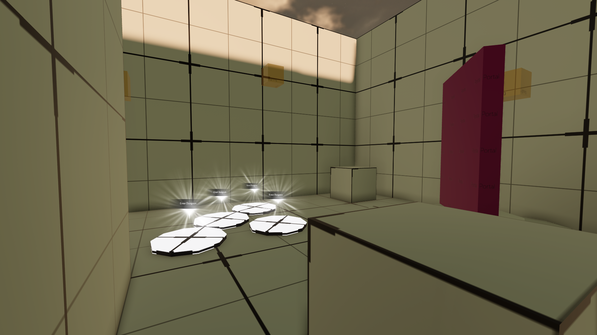
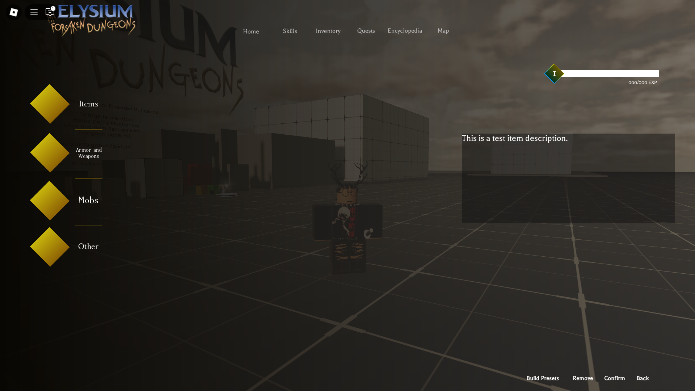
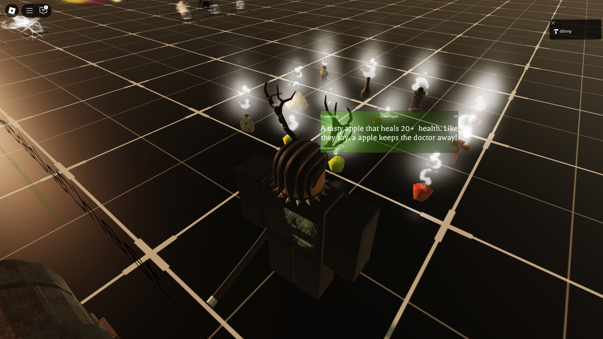
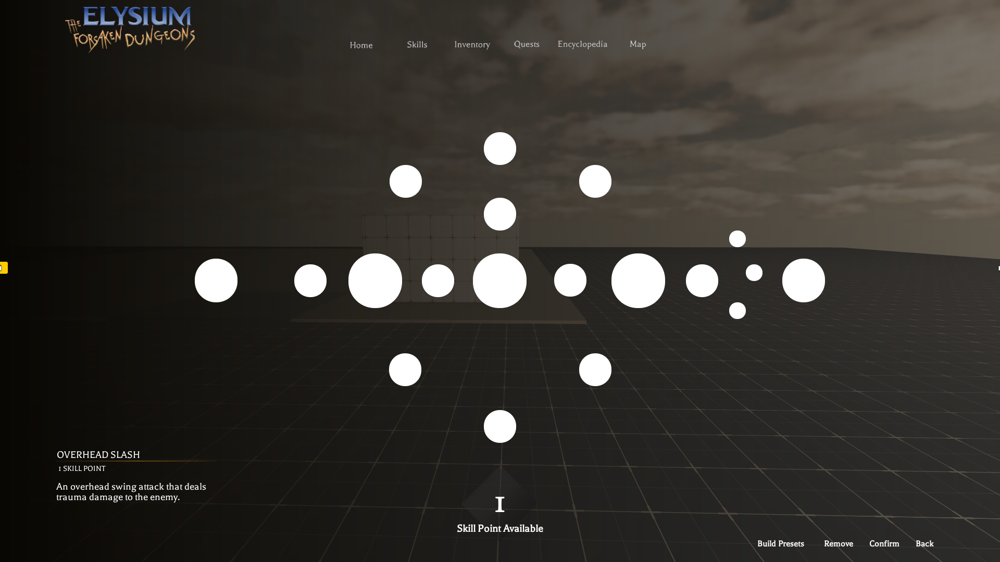
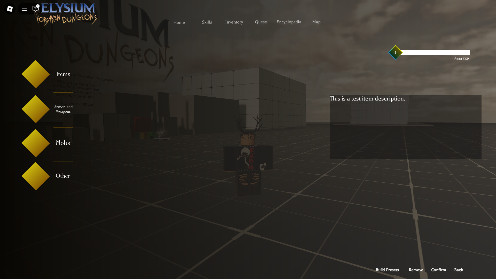
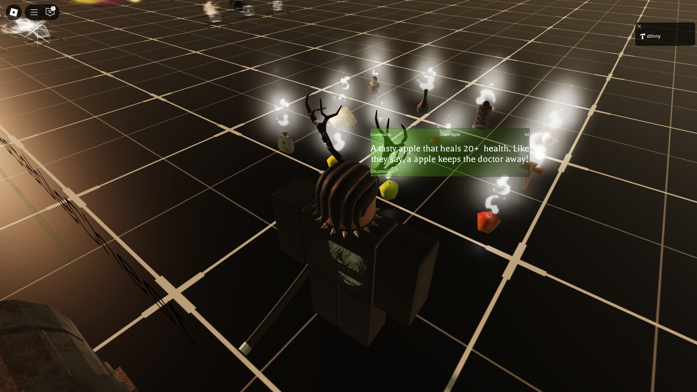
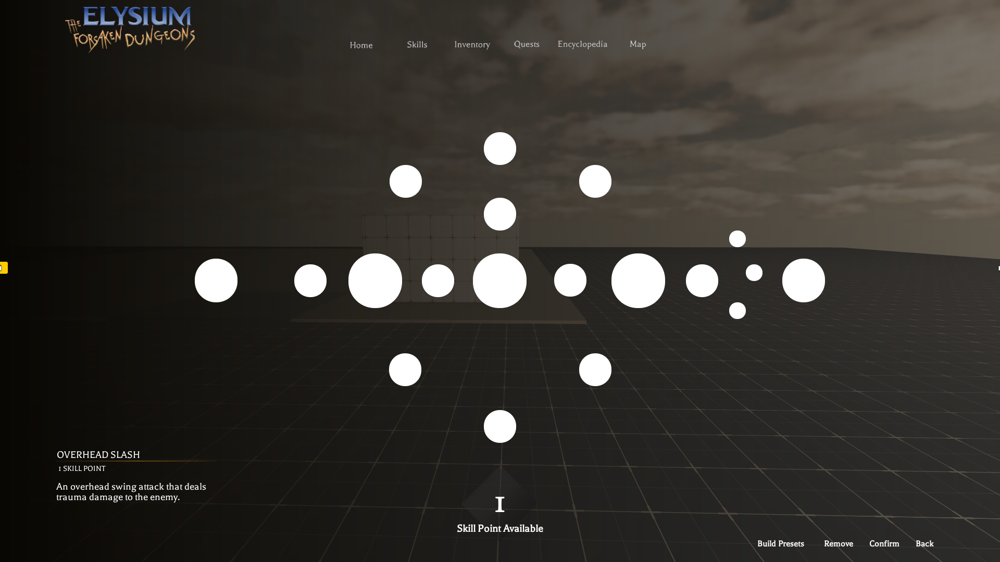

Front-End Development Updates for January: Phase 1
1/19/2025:
chatWheelUI
Using Adobe Photoshop and Adobe Illustrator, various UI elements have been incorporated into the game. Elements such as a chat wheel for players to communicate with eachother in the dungeons, quest and mission windows to remind the player of their goals, and inventory UI.
questTipsUI
Using Adobe Photoshop and Adobe Illustrator, various UI elements bhave been incorporated into the game. Elements such as a chat wheel for players to communicate with eachother in the dungeons, quest and mission windows to remind the player of their goals, and inventory UI.
1/20/2025:
Beginning the work on the dungeon entry layout
Entry to dungeons have now been layed out alongside various new UI elements such as proximityPrompts that prompt the player upon interaction into the dungeon.

More UI work done
More UI elements have been incorporated into Elysium: The Forsaken Dungeons
 





Potential euclidean portals
As of now, we are currently working/researching on a design for euclidean portals. This will allow for seamless transition and portals throughout the game. I will provide more updates as time goes.
Explore the Non-euclidean portals via YouTube for more details!